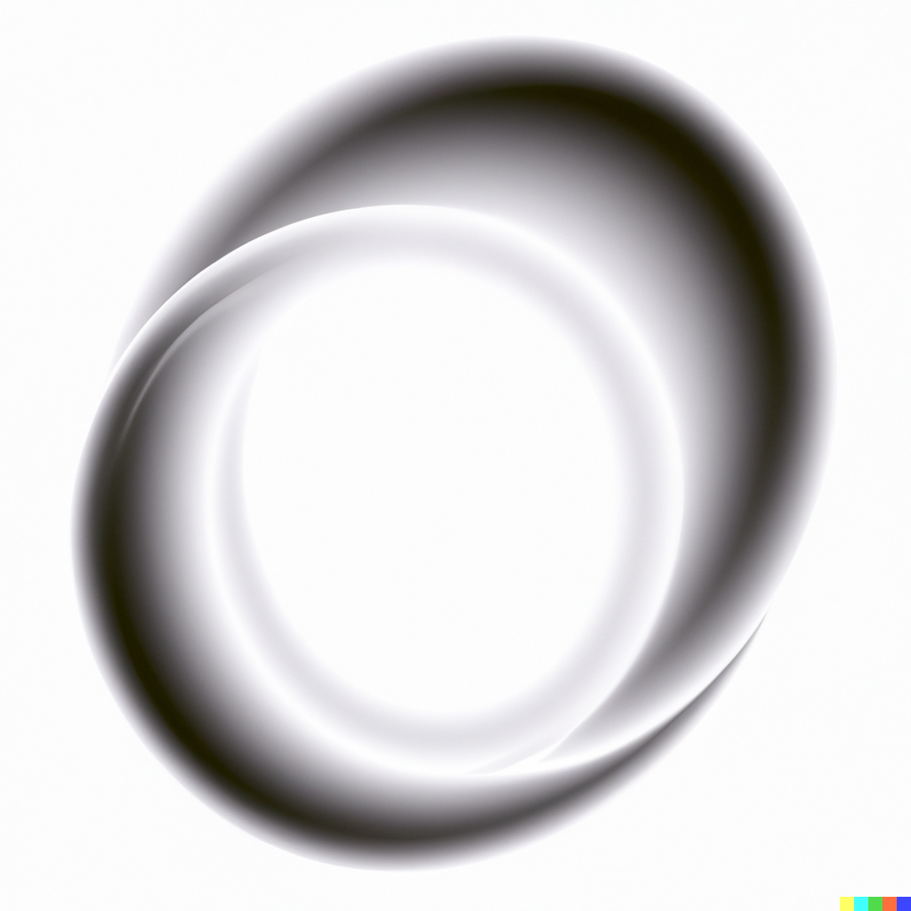

10 Reproducibility with Nix
10.1 The Nix package manager
Nix is a package manager that can be used to build completely reproducible development environments. These environments can be used for interactive data analysis or running pipelines in a CI/CD environment.
If you’re familiar with the Ubuntu Linux distribution, you likely have used apt-get to install software. On macOS, you may have used homebrew for similar purposes. Nix functions in a similar way, but has many advantages over classic package managers. The main advantage of Nix, at least for our purposes, is that its repository of software is huge. As of writing, it contains more than 80.000 packages, and the entirety of CRAN and Bioconductor is available through Nix’s repositories. This means that using Nix, it is possible to install not only R, but also all the packages required for your project. The obvious question is why use Nix instead of simply installing R and R packages as usual. The answer is that Nix makes sure to install every dependency of any package, up to required system libraries. For example, the {xlsx} package requires the Java programming language to be installed on your computer to successfully install. This can be difficult to achieve, and {xlsx} bullied many R developers throughout the years (especially those using a Linux distribution, sudo R CMD javareconf still plagues my nightmares). But with Nix, it suffices to declare that we want the {xlsx} package for our project, and Nix figures out automatically that Java is required and installs and configures it. It all just happens without any required intervention from the user. The second advantage of Nix is that it is possible to pin a certain revision of the Nix packages’ repository (called nixpkgs) for our project. Pinning a revision ensures that every package that Nix installs will always be at exactly the same versions, regardless of when in the future the packages get installed.
With Nix, it is essentially possible to replace {renv} and Docker combined, or if you’re using mainly Python, you can replace conda or requirements.txt files. If you need other tools or languages like Python or Julia, this can also be done easily. Nix is available for Linux, macOS and Windows (via WSL2). Important remark: since using Nix on Windows must go through WSL, when we refer to “Linux” in the context of Nix, this includes Windows by default as well. It is also possible to build multi-language environments, containing R and Python, a LaTeX distribution and packages and so on.
10.2 The Nix programming language
Nix is not just useful because it is possible to install many packages and even install older packages, but also because it comes with a complete functional programming language. This programming language is used to write expressions, and these expressions in turn are used to build software. Essentially, when you install a package using Nix, an expression gets downloaded from the Nix package repository (more on that in the next section), and it gets evaluated by the Nix package manager. This expression contains a so-called derivation. A derivation defines a build: some inputs, some commands, and then an output. Most of the time, a derivation downloads source code, builds the software from the source and then outputs a compiled binary. Derivations are extremely flexible, and you could write a derivation to build a complete environment and then build a complete reproducible pipeline. The output could be any of the discussed data products.
Learning the Nix programming language is a good idea if you want to contribute to the Nix package repository, but you might not have to learn it in-depth if you simply wish to use it to build reproducible environments, as we will learn now. If you wish to learn about the programming language, I highly recommend a tour of Nix1.
10.3 The Nix package repository
So, there’s the Nix package manager, the Nix programming language and the Nix package repository (henceforth nixpkgs). To look for packages click here2. The source code of all the packages (so the whole set of Nix expressions) can be found on this Github repository3. For example, here4 is the Nix expression that contains the derivation to build quarto. As you can see, the derivation uses the the pre-built Quarto binaries instead of building it from source. Adding packages to nixpkgs (or updating them) can be done by opening pull requests. For example, here5 is a pull request to make Quarto available to all platforms (before this PR Quarto was only available for Linux). PRs get reviewed and approuved by maintainers that also have the right to merge the PR into master. Once merged, the new or updated package is available for download. Because nixpkgs is a “just” Github repository, it is possible to use a specific commit hash to install the packages as they were at a specific point in time. For example, if you use this commit, 7c9cc5a6e, you’ll get the packages as of the 19th of October 2023, but if you used this one instead: 976fa3369, you’ll get packages from the 19th of August 2023. Using specific hashes is called “pinning” and you can read more about it here. We will make extensive use of pinning.
10.4 The NixOS operating system, Docker and Github Actions
NixOS is a Linux distribution that uses the Nix package manager as its package manager. I won’t go into detail here, but you should know it exists. What’s perhaps more interesting for our purposes is to use Nix within Docker. Because Nix can be installed as any other tool, you could very well build a Docker image that starts by installing Nix, and then uses Nix to install, in a reproducible manner, all the tools you need for your project.
There are also a series of Github Actions that you can use to install Nix on runners and build development environments. We will also look that.
10.5 A first Nix expression
The following expression is the one that defines the development environment to build this book:
let
pkgs = import (fetchTarball "https://github.com/NixOS/nixpkgs/archive/976fa3369d722e76f37c77493d99829540d43845.tar.gz") {};
rpkgs = builtins.attrValues {
inherit (pkgs.rPackages) quarto Ecdat devtools janitor plm pwt9 rio targets tarchetypes testthat tidyverse usethis formatR;
};
tex = (pkgs.texlive.combine {
inherit (pkgs.texlive) scheme-small amsmath framed fvextra environ fontawesome5 orcidlink pdfcol tcolorbox tikzfill;
});
system_packages = builtins.attrValues {
inherit (pkgs) R glibcLocalesUtf8 quarto;
};
in
pkgs.mkShell {
LOCALE_ARCHIVE = if pkgs.system == "x86_64-linux" then "${pkgs.glibcLocalesUtf8}/lib/locale/locale-archive" else "";
LANG = "en_US.UTF-8";
LC_ALL = "en_US.UTF-8";
LC_TIME = "en_US.UTF-8";
LC_MONETARY = "en_US.UTF-8";
LC_PAPER = "en_US.UTF-8";
LC_MEASUREMENT = "en_US.UTF-8";
buildInputs = [ rpkgs tex system_packages ];
}I won’t go into much detail, but here are some pointers: